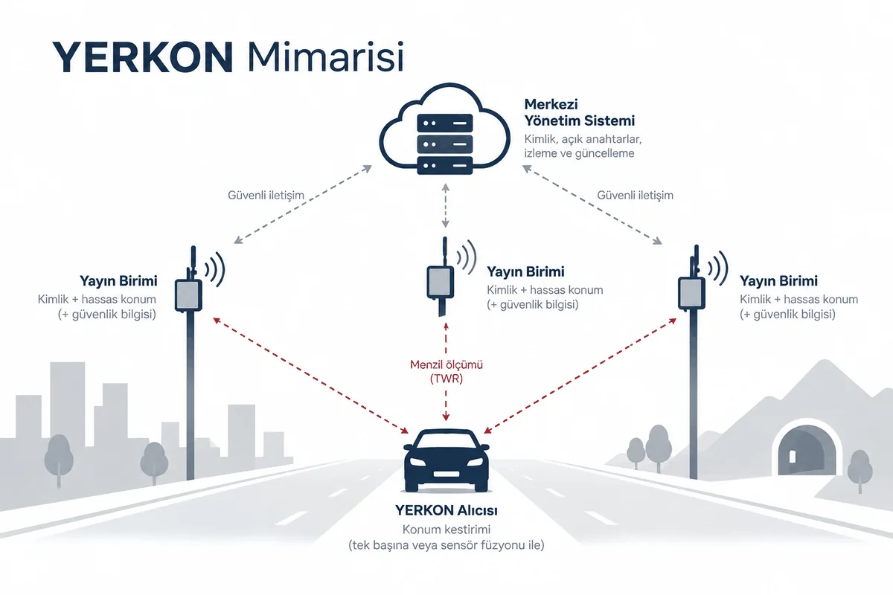

The architecture
Three parts: broadcast units standing at surveyed positions, receivers that work out their own position, and a management system that keeps the identities current.

Three parts
- The broadcast unit. A transmitter fixed to one point: a mast, a roadside unit, a communications site, or inside a tunnel. When a receiver asks, it broadcasts three things: who it is, the fixed position surveyed at installation, and the signature that shows neither is forged.
- The receiver. It goes in a vehicle or in a pocket. It combines the distances it measures to the units with the vehicle's own sensors: an inertial unit that measures movement, how far the wheels have turned, and the map. So it keeps giving a position with no satellite in sight. The simulation behind the table uses neither the inertial unit nor the wheels; only the ranges and the height from the map.
- The management system. It keeps the list of which unit holds which key. A receiver downloads that list and checks each unit's signature, so it never talks to a forged one.
Why two way ranging
Systems that look at how much later a signal reaches one unit than another (TDoA) may need precise network wide time synchronisation between the units, and the infrastructure to supply it, to reach the same accuracy. Going below a billionth of a second, for instance, means an atomic clock and IEEE 1588 PTP at every unit. One chip-scale atomic clock (Microchip SA65) costs about 5500 dollars, roughly 266400 lira (Analog IC Tips, September 2021). Two way ranging needs no network wide synchronisation: the time the signal spends in the air comes out of one short there-and-back between the unit and the receiver.
Every radio chip counts time with its own crystal, and no two crystals run at exactly the same rate. In two way ranging that difference only turns into error over the short wait before the unit answers, and the receiver estimates it from the incoming signal and removes it. In the simulation what is left after that correction stays under 20 centimetres on one range.
Each unit keeps its own private key and hands its public key to the management system. The key is 256 bit ECC and the signature is ECDSA. A sequence number gives away an old message recorded and sent again later.
In TDoA, keeping the units' clocks equal to each other takes costly infrastructure such as an atomic clock and IEEE 1588 PTP at every unit. YERKON measures range two ways, so it needs no such synchronisation at all.
Three kinds of installation
- Urban. Many short range units: base station sites, traffic signs and lights, advertising boards, roadside lighting. The unit uses EBYTE's E28-2G4M20S module, whose 2,4 GHz radio chip is the Semtech SX1280; Semtech states about ±1 m of ranging accuracy for that chip with clear line of sight. That is the accuracy of one distance between one unit and a receiver, not the final position error. Position error also depends on the units' geometry, on multipath and on obstruction, and is judged separately on HPE P50 and HPE P95.
- Open country. A few points with wide reach: intelligent transport and roadside units, base station sites, rail and road infrastructure; these are sparse, so in the simulation most units are on the electricity distribution poles along the road, with a solar panel and a battery. The equipment is certified to TS EN 300 328 with frequency hopping spread spectrum (FHSS) and listen before talk (LBT); under FHSS the density limit is 100 mW/100 kHz, which a 1,625 MHz signal does not reach, so 100 mW (20 dBm) e.i.r.p. holds. The rural unit is the same board as the urban one: the amplified module (E28-2G4M20S) and an outdoor 5 dBi rod antenna. Its difference from the town unit is not the board but where it stands: with no buildings in the way the signal reaches much further, and poles with no mains carry a solar panel and a battery. YERKON takes 8 to 10 km as a communications and coverage target, and how accurately it ranges at that distance is to be confirmed by field trials. The Polatlı ground in the simulation is steppe with few buildings, so despite its 486 m of relief the rural row came out a little better than the urban one; where there is forest, steep ground or blocked sight, rural performance is expected to fall. The result is reported as HPE P50 and HPE P95.
- Critical areas. Tunnels, metro and station areas, ports and airports, disaster logistics areas. The unit uses Qorvo's 6,5 to 8 GHz DWM3000 UWB module, which aims at about 10 cm of ranging precision where the line of sight is clear. The final position error is not the same thing: it depends on geometry, calibration, multipath and obstruction, and is measured separately in field tests as HPE P50 and HPE P95.
Receiver modules
- Pedestrian. Designed to draw little power and fit in a pocket. In town and in open country it uses the same amplified EBYTE E28-2G4M20S module (an SX1280 chip) as the poles and the vehicle; its power is set in software and turned down on a short link. It uses the Qorvo DWM3000 in tunnels and indoors. An ESP32-S3 connects it to a phone; if the signal drops, a BNO085 motion sensor carries on from the last position. A ceramic antenna for UWB, a chip antenna on the board for 2,4 GHz.
- Road vehicle. Built on an STM32 with an LCD map screen. It connects to the CAN bus of vehicles that support one and takes live data from the wheel speed sensors and the steering angle. Like the pedestrian module it carries both radios: the amplified EBYTE E28-2G4M20S module (an SX1280 chip) for wide areas and the Qorvo DWM3000 for critical ones. The DWM3000 uses its own on-board antenna; the E28-2G4M20S works with an outdoor 5 dBi rod antenna on the vehicle's roof.
- Internet of things. For robot fleets indoors and in half open areas. It talks directly to the common robot operating systems and keeps correcting its position from how far the wheels have turned and its own motion sensor. A DWM3000 is enough for most warehouse and factory work.
The hardware and its price
- At a thousand units a broadcast unit is roughly 1400 to 1700 lira and a receiver roughly 2300 to 3300 lira. Every product's price at one, a hundred and a thousand is tabled on the Cost page.
- Each product's price at one, a hundred and a thousand is the sum of its parts at their sellers' own tier prices: radio module, microcontroller, antenna, supply, protection, box, passives, printed board and assembly. The table prices at a thousand, because the operating model assumes a network of a thousand units. Every part, its seller and its price are on the Cost page.
- The prices cover every part of the board: the main parts, supply and protection, terminals, antenna cable, box, the passive components, the printed board and its assembly. Test, calibration, certification, tax and shipping are outside them; installation goes into the table as a line of its own.
- Both receivers carry an EBYTE module with an SX1280 chip and a DWM3000. That is what lets one unit range against urban units on the road and against tunnel units inside the bore, with nothing switched over.